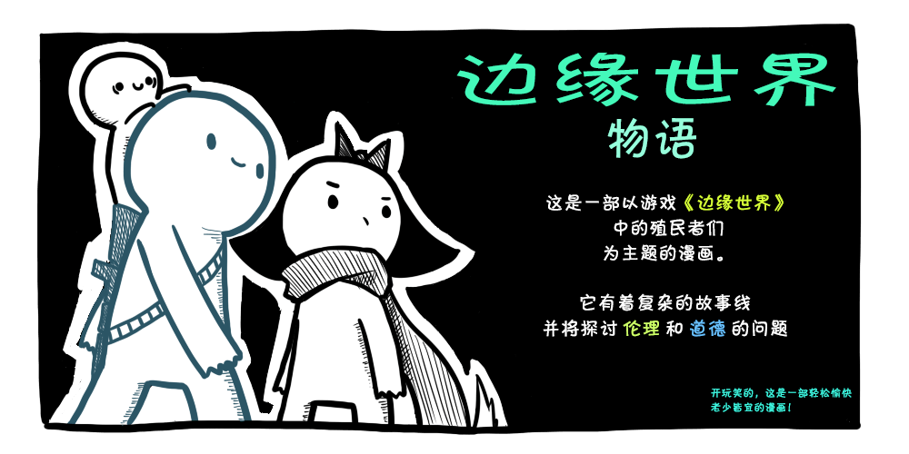

Rimworld Tales 边缘世界物语
汉化版
原作者：SrGrafo ・漫画原作・赞助他

目录
1. 边缘世界的废墟
2. 搜寻并摧毁
3. 边缘世界的闲谈
4. 边缘世界的伏击
5. 边缘世界的虚脱
6. 伤人的低语
7. 寒冬
8. 短暂的闪回
9. 重整思绪
10. 边缘世界的安抚
11. 边缘世界的感染
12. 漂亮桌子
13. 红毯
14. 嗷呜
15. 边缘世界的囚犯
16. 扫墓
17. 边缘世界的药物
18. 死神
19. 回忆（圣诞特别篇）
20. 款待（第一部分）
20. 款待（第二部分）
编外篇 闪耀世界的门
20. 款待（第三部分）
21. 墙中之兽
22. 罗密欧 555
插图
23. 原始人
24. 示爱（第一部分）
24. 示爱（第二部分）
24. 示爱（第三部分）
25. 变心
26. 收到 收到
27. 我看不见
28. 完美的殖民地
29. 手术的头脑
30. 原始的婊子
31. 改造恐惧症
32. 我叫亨茨曼
33. 奢侈的友情（第一部分）
天佑女王
33. 奢侈的友情（第二部分）
34. 飞蛾女王
35. 搜寻和营救
36. 过载
37. 555 区
38. 可憎的冬天（第一部分）
38. 可憎的冬天（第二部分）
39. 边缘世界的工兵
40. 边缘世界的清点
41. 命运是公平的
42. 边缘世界的猎人
43. 边缘世界的伤疤
44. 最后一站
45. Hootsak
46. 情绪平衡
47. 不怀好意的神灵
48. 真空
插图
49. 富有的探险家
50. 四象交迭
51. 真相
52. 无法逃避的道路
53. 善恶终有报
54. 一
55. 100%